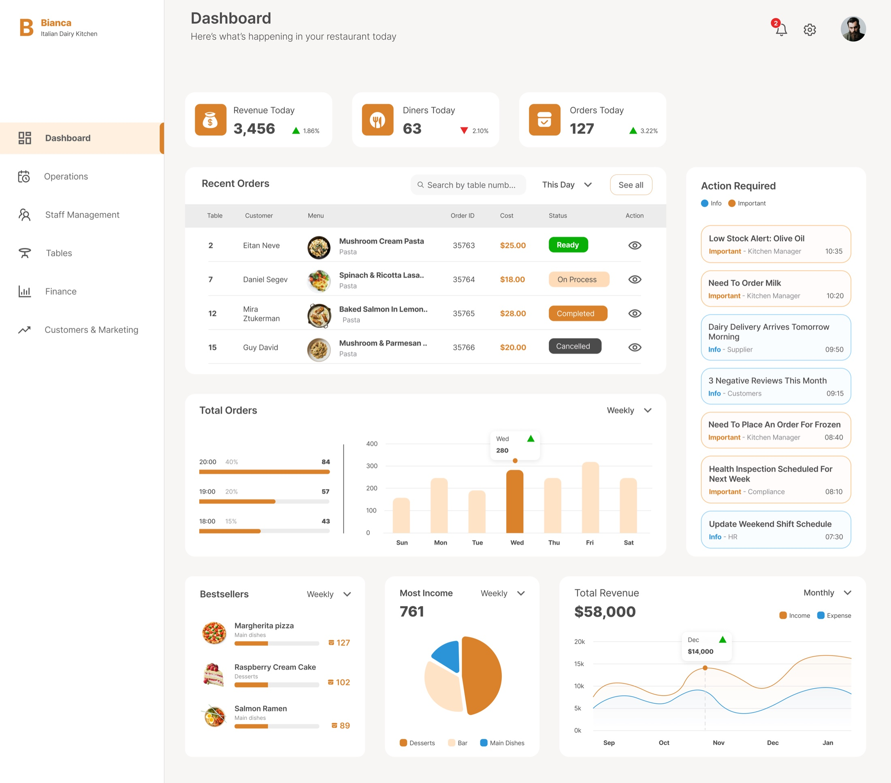
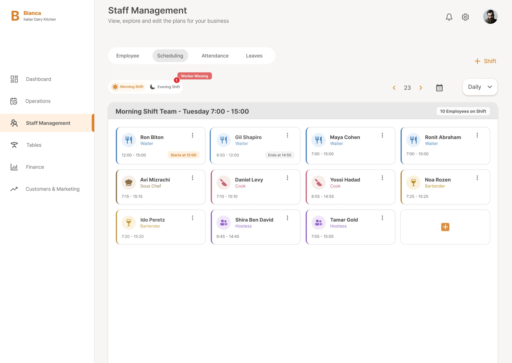
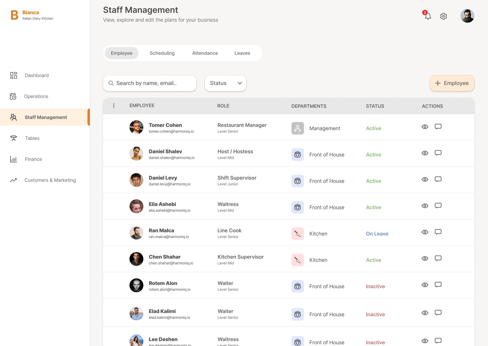

Bianca, a restaurant management dashboard
Restaurant managers face operational and human resource chaos due to a lack of real-time visibility into profitability, low inventory, and high employee turnover. Tracking tasks across multiple separate boards further disrupts their workflow, making day-to-day management less efficient.
A central dashboard with real-time insights and a smart alert system for all required management activities.
Dashboard
I established a clear division between action types based on
urgency.
Critical tasks trigger a red alert icon in the top bar, while the rest are divided into
important actions and general information that the manager needs to track.

Quick handling of two critical alerts
Handling an “important” alert
Order products
Staff management - Shift management
Centralizes all HR operations into an intuitive interface, making it effortless for managers to view, track, and edit staff information at a glance.
Alerts for staff shortages and unexpected early employee departures.



Impact
This project taught me how much architecture and a strong hierarchy matter, and how they shape every design decision.